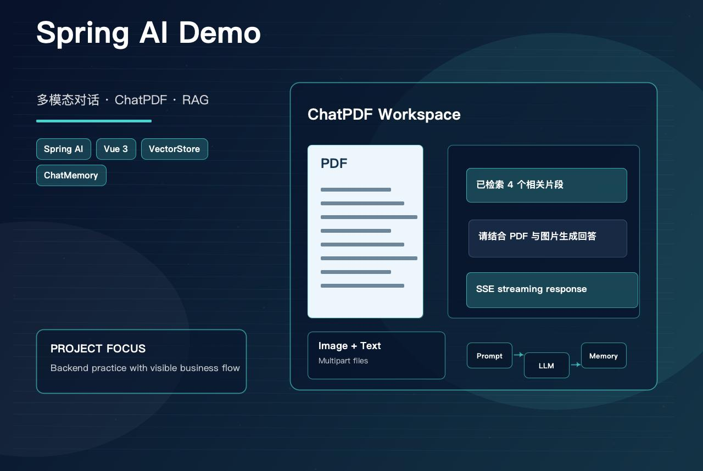
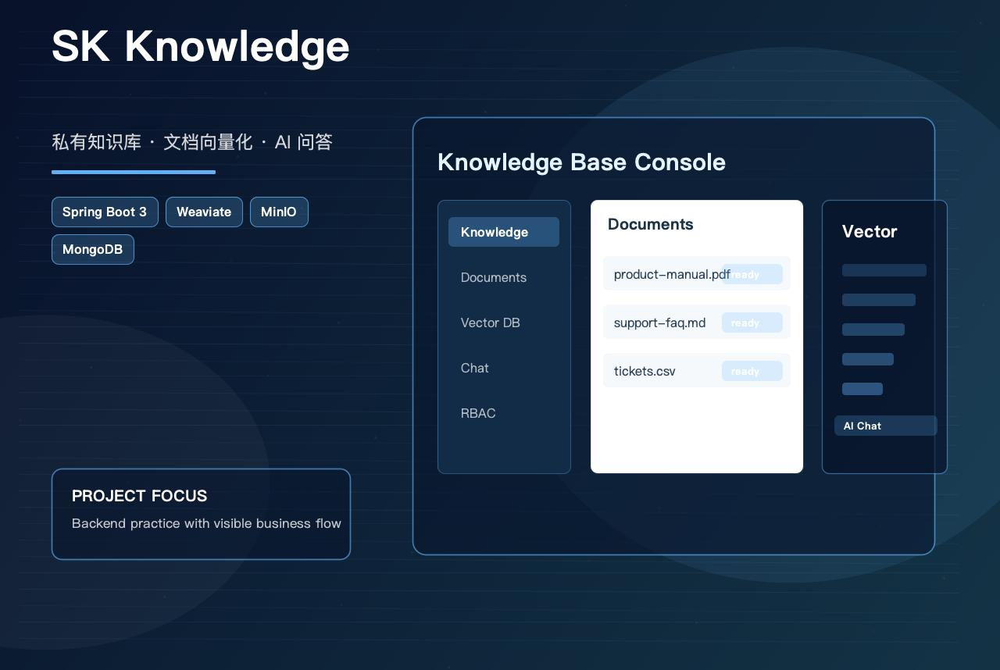
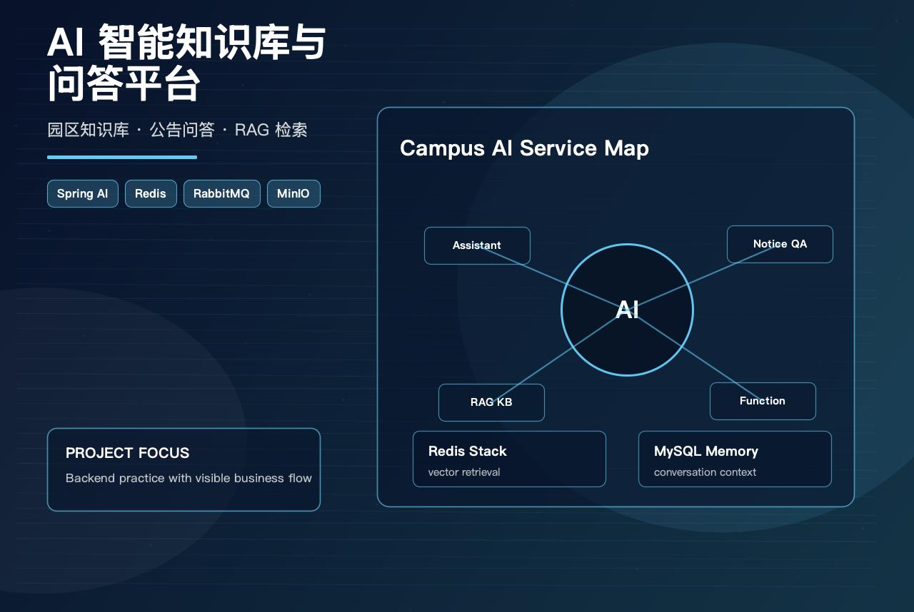
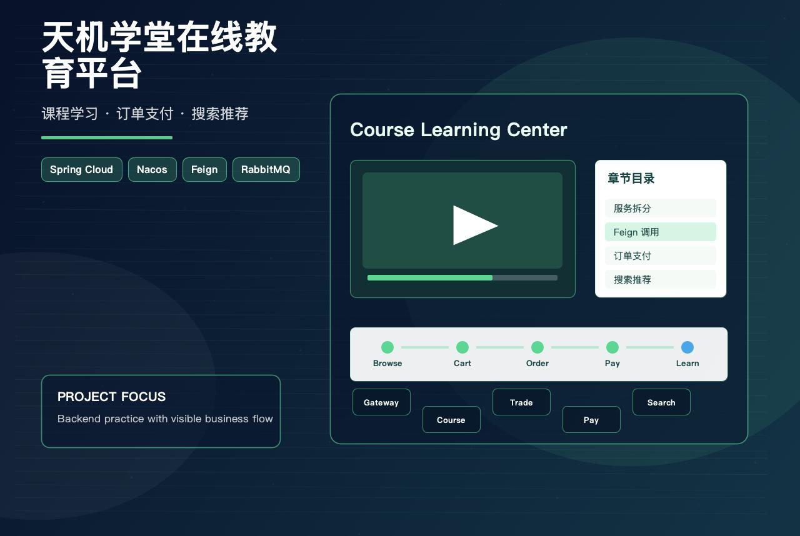
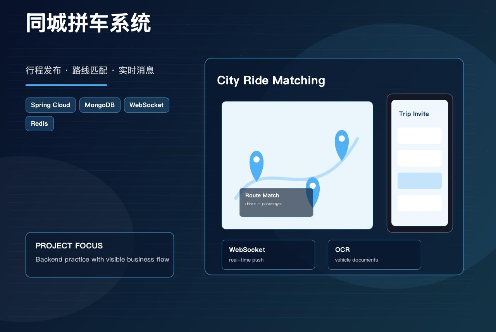
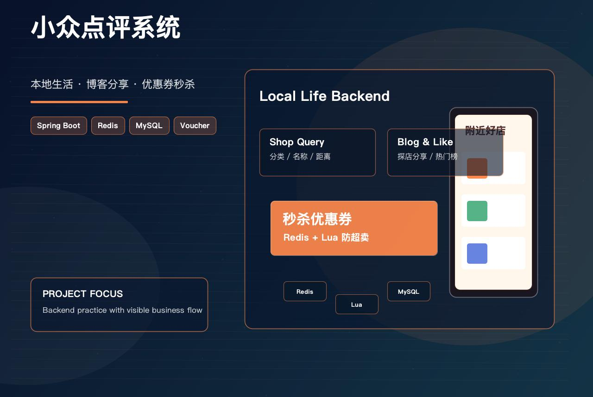
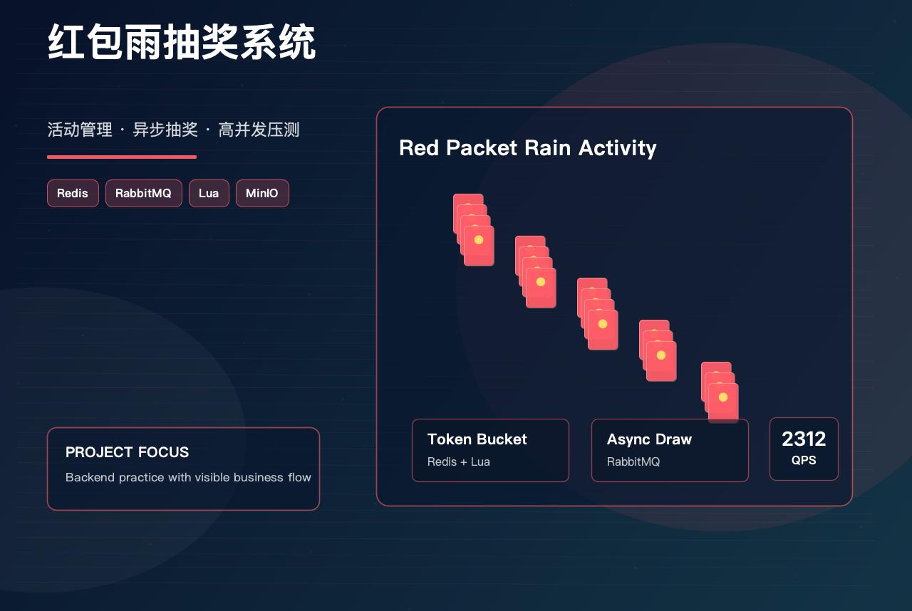
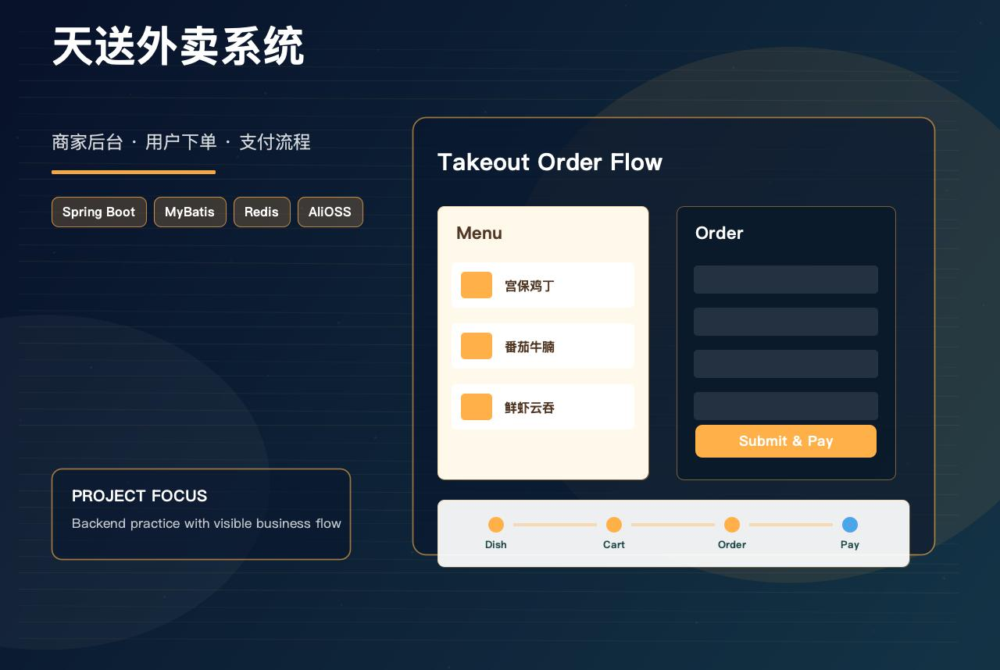

About Me
Testing is my craft; Java engineering is my technical base; AI application development is where I am growing next.
I work in software testing at HSBC Software Development (Guangdong) and hold ISTQB certification, with a Master's in Technology and Engineering Management. Day to day I run end-to-end testing across banking systems—especially card and points journeys—where accuracy, data consistency, and customer impact matter.
Alongside testing delivery, Java is my existing backend foundation, so my current hands-on projects still build on the traditional Java/Spring stack. At the same time, I am expanding toward the Python AI application ecosystem, with LangChain and AI engineering workflows as my next learning focus.
Current Growth Focus
- Focusing on AI application development with Spring AI, RAG, knowledge-base Q&A, and model service integration
- Continuing Java backend practice through existing project experience, Spring Boot, API design, persistence integration, and system design
- Expanding into the Python AI application ecosystem, with LangChain as a key next learning direction
Technical Skills
AI application development is my leading technical growth focus, while quality assurance remains my professional foundation. I combine Spring AI and Java/Spring backend practice with end-to-end testing, API validation, regression coverage, data consistency checks, and banking-domain delivery experience.
AI Applications & RAG
Hands-on with Spring AI and LLM application patterns, including chat APIs, multimodal conversation, ChatPDF, vector retrieval, knowledge-base Q&A, conversation memory, and OpenAI-compatible model integration.
Testing & Quality Assurance
Professional QA practice across functional, API, regression, and end-to-end testing, with strong attention to requirements analysis, defect tracking, data consistency, business rule validation, and release quality.
Java & Spring Backend
Proficient in Java backend development with Spring Boot and SSM-style projects; owns REST API development, service implementation, and persistence integration with disciplined interface design.
Redis & RabbitMQ
Familiar with Redis and RabbitMQ, with a working understanding of caching and message queue mechanisms.
Distributed & Microservices
Understands distributed system basics, with hands-on Spring Cloud microservices and message queue integration for async and cross-service flows.
Credit Card & Banking Domain
Familiar with credit-card business flows—points programs, marketing campaigns, and payment validation across channels and systems.
Work Experience
Testing and project work at HSBC Software Development and Kehua Data.
Business QA
HSBC Software Development (Guangdong) Co., Ltd.
Jan 2024 - Present
Project 1: Hang Seng Bank FUN Center Credit Card Points Mall
Project Overview: Raise cardholder engagement and satisfaction with an integrated points platform—accounts, redemption, campaigns, and lucky-draw experiences—alongside operations reporting tests to keep business statistics accurate.
- Led core testing for the points mall: account journeys, campaign surfaces, FUN Shop redemption, and Lucky Draw modules.
- Ran end-to-end coverage across the points lifecycle, pairing the mobile app with back-office reporting to verify data accuracy and consistency.
- Authored and executed functional, API, and regression suites; tracked defects with emphasis on points debits, reward fulfillment, and reporting logic.
Software Testing
Kehua Data Co., Ltd.
Oct 2022 - Jul 2023
OCT Integrated Water–Electricity & Infrastructure Management Platform (incl. Metro Energy Operations subsystem)
Project Overview: OCT integrated water–electricity and infrastructure management platform, including the metro energy operations subsystem, spanning billing and intelligent O&M monitoring.
- Owned end-to-end billing testing—rules, charging, invoicing, and reconciliation—to protect logic and data consistency; extended coverage to customer and asset management modules, including exception paths.
- Tested the intelligent O&M monitoring stack (equipment monitoring, energy management, alarms, analytics microservices) and supported environment setup plus regression passes to reproduce and verify complex scenarios faster.
Personal Projects
Practice and notes across backend systems, distributed architectures, and AI-style applications.
AI & RAG Practice
Spring AI applications, conversational workflows, multimodal chat, vector retrieval, and document Q&A.

Spring AI Demo
A frontend-backend separated Spring AI learning demo covering chatbots, multimodal image-text conversations, business Q&A, conversation history, and PDF-based RAG.
Key Achievements:
- Built general chat, emotional-support simulation, and business customer-service scenarios with reusable conversation APIs
- Implemented multimodal chat by accepting prompt, chatId, and optional image files, then routing text-only and image-text requests appropriately
- Developed ChatPDF workflow that uploads PDF files, splits pages into documents, writes vectors into VectorStore, and filters retrieval by current session file
- Integrated ChatMemory with chatId-based conversation history for multi-turn dialogue and contextual PDF Q&A

SK Knowledge RAG Knowledge Base System
An intelligent private knowledge base and Q&A system built with Spring Boot, supporting document upload, vector retrieval, AI chat, RBAC permissions, and conversation history.
Key Achievements:
- Built multi-knowledge-base management with retrieval configuration, knowledge sharing, and permission control
- Implemented document processing for PDF, DOC, DOCX, TXT, CSV, and MD, including text extraction, semantic chunking, vectorization, and status tracking
- Integrated Weaviate, MinIO, MySQL, MongoDB, and Redis for vector search, object storage, business persistence, and cache/session support
- Developed OpenAI-compatible chat with model management, SSE streaming responses, context association, conversation history, and Spring Security + JWT authentication

AI Knowledge Base & Q&A Platform
An intelligent knowledge base and Q&A system built on large language models, using Spring AI and vector retrieval to improve search quality and user experience.
Key Achievements:
- Built an AI assistant with Spring AI, supporting conversational Q&A, prompt optimization, and conversation memory persistence in MySQL
- Implemented Function Calling to collect user information automatically, write it into the database, and update session context dynamically
- Developed a conversational announcement system with vectorized storage and retrieval, enabling natural-language question answering
- Built a RAG knowledge base on Redis Stack, combining vector retrieval with LLM generation for intelligent document search and summarization
Microservices & Distributed Systems
Multi-module backend systems with service splitting, messaging, distributed coordination, orders, payments, and search.

Tianjixuetang Online Education Platform
A Spring Cloud microservices online education platform covering course management, online learning, course purchases and payments, exam practice, media, messages, search, and analytics.
Key Achievements:
- Organized gateway, authentication, course, learning, exam, media, trade, pay, message, search, and data services with Nacos configuration and Feign calls
- Implemented course lifecycle features including category management, catalog chapters, teacher binding, video upload, question binding, and listing review workflow
- Built course purchase flow from login, browsing, cart, order confirmation, payment, permission acquisition, and learning access
- Integrated Redis, Redisson, RabbitMQ, Elasticsearch, cloud media storage, and SMS notifications for distributed business scenarios

O2O City Ride System
A city-based carpooling platform supporting drivers posting trips, passenger route matching, order generation, and message notifications. Based on microservices architecture with high availability and real-time communication, covering registration, trip publishing, ride invitations, and complete payment workflow.
Key Achievements:
- Developed User module with personal info, password modification, and document uploads
- Integrated Baidu OCR for automatic vehicle and identity document recognition
- Designed trip fare calculation algorithm using Decorator pattern with map API integration
- Implemented order timeout handling and WebSocket real-time push for smooth user interaction
Business Backend Projects
Spring Boot business systems for local-life services, catering, campaigns, user flows, and high-concurrency scenarios.

Xiaozhong Dianping Local Life Review System
A Spring Boot backend for local-life reviews, supporting user login, shop queries, blog sharing, social interactions, voucher release, and flash-sale coupon purchasing.
Key Achievements:
- Built user authentication with mobile verification code login, session management, and current-user context storage
- Developed shop and blog modules supporting shop lookup, category queries, blog publishing, likes, hot blog ranking, and user blog lists
- Implemented voucher management and flash-sale purchasing flows with Redis-based caching and distributed-lock practice
- Structured the backend around controller, service, mapper, DTO, entity, and utility layers using MyBatis-Plus with MySQL persistence

Red Packet Rain Lottery System
Enterprise-level lottery activity management platform, supporting red packet rain, lottery events, prizes, and member management. Suitable for high-concurrency scenarios such as corporate annual meetings and holiday events.
Key Achievements:
- Developed User and Activity modules with accurate real-time data display for frontend
- Optimized high-concurrency using Redis preloading and token bucket + Lua scripts to prevent overselling
- Implemented asynchronous lottery processing with RabbitMQ for improved system stability
- Achieved QPS of 2312 on core interfaces through JMeter performance testing

Sky Take Out System
A catering management system with frontend-backend separation, including a merchant backend management system and a user mini program. Supports dishes, set meals, categories, and orders, optimizing user ordering experience and merchant management efficiency.
Key Achievements:
- Developed merchant backend managing employees, dishes, categories, and set meals with pagination
- Implemented mini-program caching for dishes and set meals, improving frontend interaction efficiency
- Built shopping cart management (add, view, clear) and order submission workflow
- Designed payment flow with simulated WeChat Pay integration for smooth user ordering experience